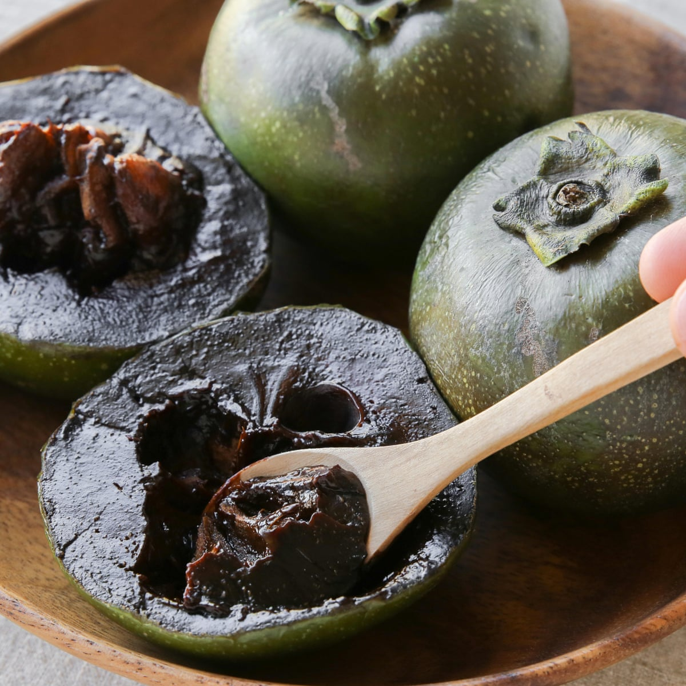

60 Percent of the human brain matter is made up of fat.
The American Association of State Higway Officials colored stop signs yellow because they presumed that it would catch the drivers' attention.
They consider red at the time, but all the dye available in 1922 that was red would eventually fade.
The name of this fruit is called Black Sapote, also called the chocolate pudding fruit.
When the fruit is fully ripen, many people had refered the flavor and consistency of pudding.
Every one hundred years, the moon adds approximately 1.4 milliseconds to a day.
This may be extremely small but it does add up after a huge period of time. When dinosaurs roamed the planet, the days lasted only 23 hours.